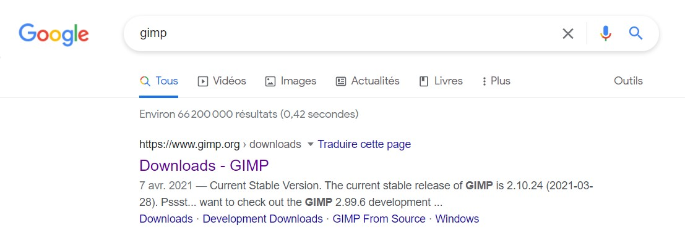
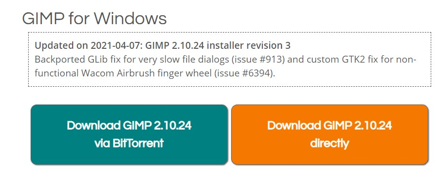
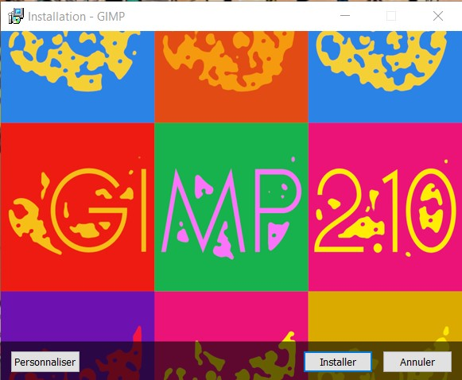
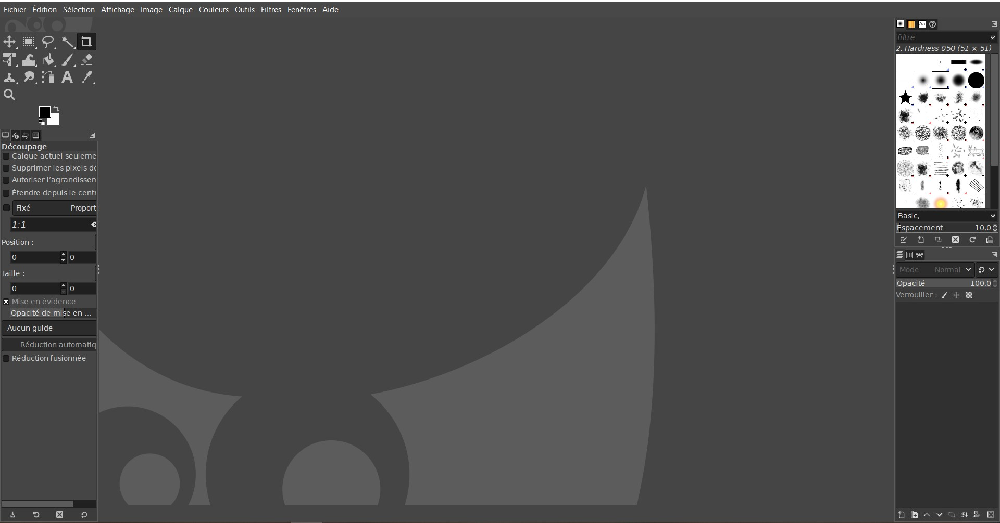
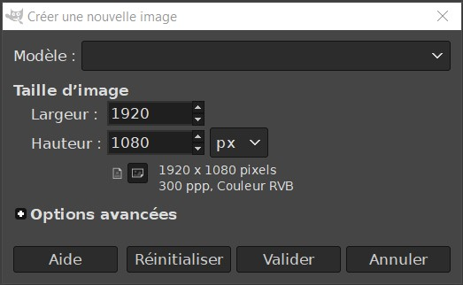

Gimp est un logiciel d’édition d’images créé en 1995. Tout comme son célèbre concurrent Photoshop, Gimp ne sert pas vraiment à dessiner, mais plutôt à modifier des images matricielles existantes (typiquement des photographies numériques) à l’aide de fonctions telles que la correction chromatique, la retouche, les filtres, le recadrage, le montage, etc.
La bonne diffusion de Gimp est due à sa maturité en tant qu’outil mais aussi au fait qu’il s’agit d’un outil libre et gratuit.
La première étape de cette installation est bien évidemment de chercher dans votre navigateur préféré "gimp".

Choisissez alors le premier lien "Downloads gimp" puis descendre jusqu'à trouver :

Cliquez sur le bouton orange puis attendre la fin du téléchargement.
Une fois le téléchargement terminé, ouvrir le gestionnaire de fichier windows (l'icone dossier vous permettant d'accéder à vos fichiers).
Aller dans "Téléchargements" ou "Downloads".
Double cliquer sur le fichier que vous venez de télécharger.
Le choix de la langue vous est alors proposer, choisissez français puis appuyez sur "ok".
La fenêtre suivante s'ouvre :

Cliquez sur "Installer".
Une nouvelle fenêtre avec une barre de chargement verte s'affiche, attendez la fin de celle ci.
Choisissez "Installer uniquement pour moi"
Et voila, c'est terminé !
Lors de l'ouverture de Gimp, nous obtenons la fenêtre suivante :

À l’ouverture, Gimp nous présente une fenêtre vide, accompagnée d’un certain nombre de palettes d’outils : propriétés, calques, outils d’édition, etc.
Ouvrir une image déjà existante
Depuis le menu "fichier" en haut à gauche, choisir "ouvrir..." puis sélectionner l'image voulu avec le gestionnaire de fichier.
Créer une image
Depuis le menu "fichier" en haut à gauche, choisir "Nouvelle image".

L'interface nous demande alors de choisir les dimensions de notre nouvelle image, à vous de choisir !
Quelques exemples de fonctionnalités
-> La «boite à outils » (que
l’on peut chercher dans le menu « fenêtre > boite à outils »
si elle n’est plus présente) permet d’intervenir manuellement
sur l’image à l’aide d’outils tels que le crayon, le pinceau,
l’aérographe, le texte, les outils de sélection, de déformation,
etc.
-> Le menu « couleurs » est
extrêmement important, c’est avec lui que l’on ajuste les
couleurs et le contraste selon plusieurs outils très standard :
balance des couleurs, contraste, luminosité, saturation,
niveaux, courbes, etc. ;
-> Les calques , enfin, sont
très utile pour traiter une image comme autant d’éléments
distincts dont on peut ajuster la position ou d’autres
paramètres
Enregistrer une image
Depuis le menu "Fichier" puis "Enregistrer sous..." nous permet alors de choisir l'emplacement et le nom de notre image.
Exporter pour le Web
Depuis le menu "Fichier" choisir "Exporter sous ..." nous permet alors de choisir l'emplacement, le nom ainsi que le format de notre image.
JHermilier